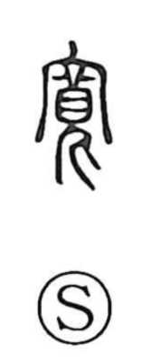

寛

Uncategorized
Kun: kutsurogu | On: kan
lenient ・ tolerant ・ magnanimous ・ spacious ・ abundant ・ to relax
Explanation
Originally written 寬, the character depicts a miko—a female medium with boldly drawn eyebrows—praying within an ancestral hall under a roof. It captures the moment of divine possession, when the medium voices a god’s oracle. Because this inspired state is free from ordinary constraints, the character came to suggest ease and gentleness, hence leniency and magnanimity; and as the gods’ favor brings fullness, it further extended to ideas of abundance and breadth. From there it was applied broadly to a person’s generous, open bearing and to a spacious, relaxed atmosphere.